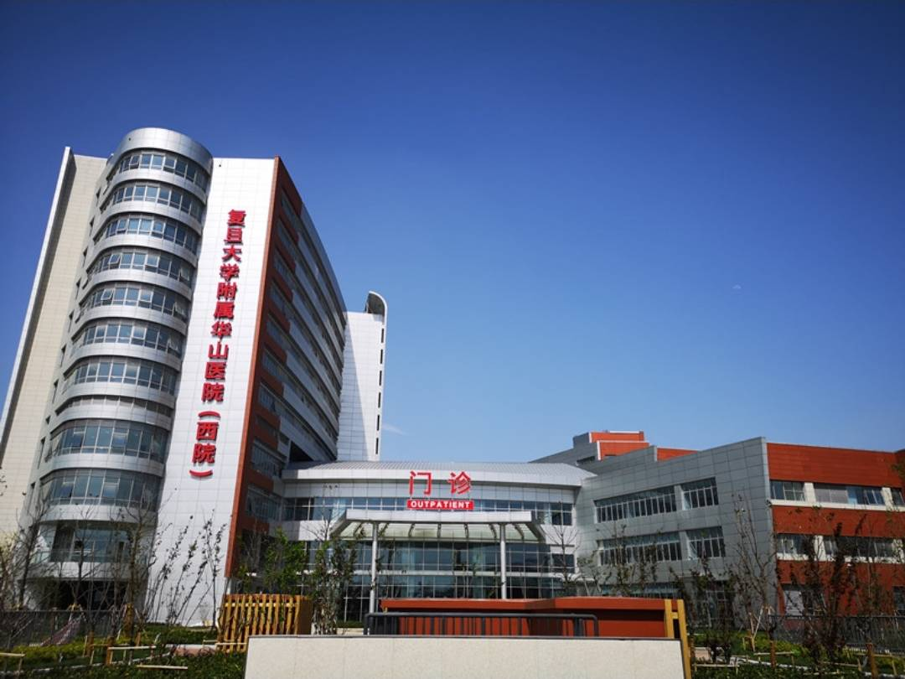

Quick Cost Comparison — Shanghai vs US
What's in This Guide
Why International Patients Choose Shanghai
Shanghai is China's largest city and its most internationally-connected medical hub. The city's hospitals serve a catchment area of over 30 million people in the Yangtze River Delta — one of China's wealthiest regions — and have developed medical capabilities that rival the best in the world across several specialties.
For international patients, Shanghai offers a distinct combination: hospitals with genuinely world-class expertise in specific specialties (particularly neurosurgery, endocrinology/metabolic surgery, and cardiac surgery), a healthcare system that is more accustomed to international patients than anywhere else in China, and a city that is immediately comfortable for foreign visitors — international-standard hotels, restaurants, and infrastructure right alongside the hospitals.
Ruijin Hospital (瑞金医院) and Huashan Hospital (华山医院) are the flagship institutions — both affiliated with Shanghai Jiao Tong University's School of Medicine and consistently ranked among China's top 10 hospitals nationally. Ruijin is particularly renowned for endocrinology and metabolic surgery (including gastric bypass for diabetes), oncology, and cardiac surgery. Huashan is China's preeminent neuroscience center — neurology, neurosurgery, and brain research.
Ruijin Hospital — Shanghai's Top Academic Center
Ruijin Hospital (瑞金医院 — Shanghai Jiao Tong University Affiliated)
Ruijin Hospital is one of Shanghai's most prestigious medical institutions — founded in 1907 as a救治中国的慈善医院, it has evolved into a 3,000-bed medical complex that consistently ranks among the top 3 hospitals in Shanghai and top 10 nationally. It is internationally renowned for:
- Endocrinology and Metabolic Surgery: Ruijin is the global leader in metabolic/bariatric surgery for Type 2 diabetes. Professor Zhou Zhou, Ruijin's diabetes surgeon, has performed more gastric bypass surgeries for diabetes remission than any surgeon in the world, and Ruijin's clinical outcomes data has been published in the New England Journal of Medicine. This is the hospital that established surgical diabetes treatment as a legitimate medical field.
- Oncology: Strong across surgical oncology, medical oncology, and radiation therapy. Particularly renowned for gastrointestinal cancers, thyroid cancer, and breast cancer treatment.
- Cardiac Surgery: High-volume cardiac surgery center with particular strength in coronary artery bypass, valve surgery, and minimally invasive cardiac procedures.
- Transplantation: Active kidney and liver transplant program, among the most experienced in Shanghai.
International services: Ruijin's international clinic is on the 9th floor of the main building and handles foreign patient appointments, English-language consultations, and medical coordination. Coordinators speak English and have experience with patients from Southeast Asia, Europe, and North America. Accepts major international insurance plans — confirm direct billing in advance.
Address: No. 197 Ruijin Second Road, Huangpu District, Shanghai (黄浦区瑞金二路197号). Metro Line 1 and 10 (South Shaanxi Road Station, Exit 1).
Huashan Hospital — China's Neuroscience Leader
Huashan Hospital (华山医院 — Shanghai Jiao Tong University Affiliated)

Huashan Hospital is China's leading institution for neurology and neurosurgery — a designation it has held for decades through sheer clinical volume and research output. It handles the most complex brain and spine cases from across China and East Asia, and is internationally recognized for:
- Deep Brain Stimulation (DBS): Huashan's neurosurgery team has performed more DBS procedures for Parkinson's disease than any other hospital in China. Surgeon Professor Sun Bomin's outcomes data is among the best globally. Patients come from Southeast Asia, the Middle East, and Europe specifically for DBS surgery at Huashan.
- Brain Tumors: One of the highest-volume brain tumor surgery centers in Asia. The neuro-oncology team uses intraoperative MRI, awake craniotomy for language-area tumors, and minimally invasive approaches.
- Neurology: The neurology department handles the full spectrum of neurological disease — stroke, multiple sclerosis, epilepsy, Alzheimer's disease, and rare neurological conditions. Has dedicated clinical trial programs for new neurological drugs.
- Spine Surgery: Strong in complex spinal deformity correction, minimally invasive spine surgery, and spinal tumor resection.
International services: Huashan's international clinic handles appointments for international patients and has coordinators experienced with medical tourists. The hospital has treated patients from over 50 countries. English is well-established in the international clinic — though complex neurosurgery consultations may require a medical interpreter.
Address: No. 12 Middle Wulumuqi Road, Jing'an District, Shanghai (静安区乌鲁木齐中路12号). Metro Lines 1, 7 (Jing'an Temple Station).
Other Top Hospitals in Shanghai
Zhongshan Hospital (中山医院 — Fudan University Affiliated)
Zhongshan Hospital is Fudan University's flagship clinical hospital and one of Shanghai's largest and most comprehensive medical centers. It is particularly known for cardiology and cardiovascular disease treatment (it has Shanghai's most active cardiac catheterization center), cardiac surgery, and liver transplantation. Its VIP ward provides English-language services for international patients at competitive prices.
Address: No. 180 Fenglin Road, Xuhui District, Shanghai.
Shanghai Sixth People's Hospital (上海第六人民医院)
Particularly renowned for endocrinology and diabetes treatment — it is where the concept of "metabolic surgery" was pioneered in China. Also known for its ultrasound department (one of the most experienced diagnostic ultrasound centers in Asia) and orthopedics (particularly joint replacement and sports medicine). More accessible for international patients than Ruijin, with an established international clinic and shorter wait times.
Address: No. 600 Yishan Road, Xuhui District, Shanghai.
Shanghai United Family Hospital (上海和睦家医院)
Shanghai's premier private international hospital — fully JCI-accredited, English-speaking throughout, and providing care to international standards. Costs are 3-6x higher than public hospitals but significantly below equivalent Western hospitals. Particularly popular with expat families for obstetrics, pediatrics, and general family medicine. Also handles specialist referrals to Shanghai's top public hospitals when needed.
Address: No. 1139 Xinyun Road, Gubei, Changning District, Shanghai. Multiple clinic locations.
Shanghai Eye Hospital (上海市第一人民医院 — Eye & ENT)
For ophthalmology specifically, Shanghai Eye Hospital (上海市第一人民医院眼科) is the city's leading eye hospital, handling everything from routine cataract surgery to complex retinal surgery, refractive surgery (LASIK, SMILE, ICL), and glaucoma treatment. Strong team of ophthalmologists with international training and English-capable patient services.
Address: No. 85 Wujin Road, Hongkou District, Shanghai.
Shanghai Children's Medical Center (上海儿童医学中心)
Shanghai's leading children's hospital, affiliated with Shanghai Jiao Tong University. Particularly known for pediatric cardiac surgery (including complex congenital heart defect repairs), pediatric oncology, and neonatal intensive care. Draws complex pediatric cases from across East Asia. International patient services available through its overseas patient office.
Address: No. 1678 Dongmen Road, Pudong District, Shanghai.
Shanghai Hospital Specialties
| Specialty | Top Hospital in Shanghai | Shanghai Cost (USD) | US Equivalent Cost |
|---|---|---|---|
| Metabolic / Diabetes Surgery | Ruijin Hospital | $10,000–$15,000 | $20,000–$35,000 |
| Deep Brain Stimulation (Parkinson's) | Huashan Hospital | $25,000–$40,000 | $80,000–$150,000 |
| Brain Tumor Surgery | Huashan Hospital | $12,000–$25,000 | $80,000–$200,000 |
| Cardiac Bypass / Valve | Zhongshan Hospital, Ruijin | $11,000–$16,000 | $80,000–$120,000 |
| Spine Surgery | Huashan Hospital, Ruijin | $7,000–$14,000 | $60,000–$100,000 |
| Cancer / Oncology | Ruijin Hospital, Fudan Cancer Hospital | $12,000–$40,000 | $100,000–$300,000 |
| LASIK / Refractive Surgery | Shanghai Eye Hospital | $1,500–$2,500 per eye | $4,000–$6,000 per eye |
| Pediatric Cardiac Surgery | Shanghai Children's Medical Center | $15,000–$35,000 | $100,000–$300,000 |
What a Real Patient Journey Looks Like
Yuki, 52, from Japan — deep brain stimulation at Huashan Hospital for Parkinson's disease:
"I had been living with Parkinson's disease for seven years in Tokyo. My neurologist suggested deep brain stimulation surgery, but the waiting list was over a year, and even with Japan's universal health insurance, the out-of-pocket cost was significant.
My family researched hospitals in Asia and Huashan Hospital came up repeatedly for DBS surgery in Asia — specifically Professor Sun Bomin's team, who has published extensively on long-term outcomes. I contacted Huashan's international office by email with my medical records and video of my motor symptoms. They responded within five days with a proposed treatment plan and cost estimate.
I flew to Shanghai, had my pre-operative assessments over two days, and surgery was on the third day. The procedure went well — Professor Sun's team had performed over 2,000 DBS procedures. I was discharged after five nights and did my device programming at their outpatient clinic. Total cost including surgery, hospital stay, the DBS device, and the programming follow-ups was $28,500 USD. In Japan, the same surgery would have cost approximately ¥4 million (about $27,000) after insurance, with a 12-month wait."
How to Book as a Foreigner
Option 1: Through the Hospital's International Clinic (Recommended)
Ruijin, Huashan, and Zhongshan all have international clinics that handle foreign patient inquiries. Submit your medical records (in English or with translation), describe your condition, and they will schedule specialist appointments and provide cost estimates. Response times typically 2-5 business days.
Ruijin Hospital International Clinic: Email: rjh_intl@rjh.com.cn | Phone: +86-21-6437-0045
Huashan Hospital International Clinic: Email: huashan_intl@fudan.edu.cn | Phone: +86-21-5288-7999
Option 2: Through Our Free Case Review Service
We work directly with international coordinators at Shanghai's top hospitals. Send us your diagnosis and medical reports — we'll identify the most appropriate specialists, get you written cost estimates, and handle appointment logistics within 24-48 hours.
Option 3: In Person
For patients already in Shanghai, visit the international clinic of your chosen hospital with your passport and medical records. Bring MRI/CT scans on disc if available. International clinics are typically open Monday-Friday, 8am-5pm.
We connect international patients with the right specialists at Ruijin, Huashan, and other top Shanghai hospitals — for free.
Get a Free Hospital Assessment →
Frequently Asked Questions
Does Ruijin Hospital accept foreign patients?
Yes. Ruijin's international clinic is experienced with international patients and has coordinators who speak English. The hospital accepts most major international insurance plans. Ruijin is particularly recommended for metabolic/bariatric surgery, endocrinology cases, oncology, and cardiac surgery — and is one of the few hospitals in the world with published long-term clinical data on diabetes remission surgery.
What is the best hospital in Shanghai for neurosurgery?
Huashan Hospital is China's leading institution for neurosurgery and neurology — no other hospital in China has more published research or surgical volume in these specialties. For brain tumors, Parkinson's disease surgery (DBS), aneurysms, and complex spine surgery, Huashan's neurosurgery department draws patients from across Asia and beyond.
How do Shanghai hospital costs compare to the US?
Surgery at Shanghai's top hospitals typically costs 60-75% less than equivalent treatment in the US. A gastric bypass/metabolic surgery at Ruijin costs approximately $10,000–$15,000 USD versus $20,000–$35,000 in the US. Deep brain stimulation surgery at Huashan runs $25,000–$40,000 versus $80,000–$150,000 in the US. Even including travel costs, the total is significantly cheaper.
Is there English-speaking staff at Shanghai hospitals?
Yes, parti cularly at the international clinics of Ruijin, Huashan, and Zhongshan, and throughout Shanghai United Family Hospital. Shanghai's healthcare system is the most internationally-oriented in China, and major hospitals have established English-language patient services. For complex neurosurgery consultations, a medical interpreter can be arranged in advance.
How do I get from Shanghai airport to Huashan Hospital?
Shanghai Pudong International Airport (PVG) is about 45km from central Shanghai. Options: pre-arranged hospital transfer (most convenient), taxi (approximately ¥200-300, 50-70 minutes), or Maglev train to Longyang Road Station, then Metro Line 7 to Jing'an Temple (approximately 90 minutes, ¥55).